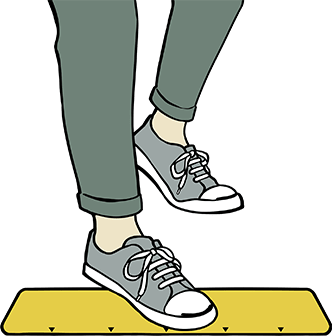

Stance
The position of your feet when throwing darts is called the "stance". The stance is important as it helps to firmly stabilize your body. It is OK to stand on the throw line. Be careful not to step over the line!
Middle stance (Medium style)
Stand diagonally to the dart board
This is the most standard stance. This is a balanced form that makes it easy to adjust the position of your legs and how you position your center of gravity and makes it easier to aim. The angle tends to change each time so try to take the same stance all the time.
Open stance (Front positioning)

Stand facing the dart board straight
It is easy to take the same angle with this stance, but since you cannot lean forward, your release will be further away from the board. Not many players use this stance. This is also called the front stance.